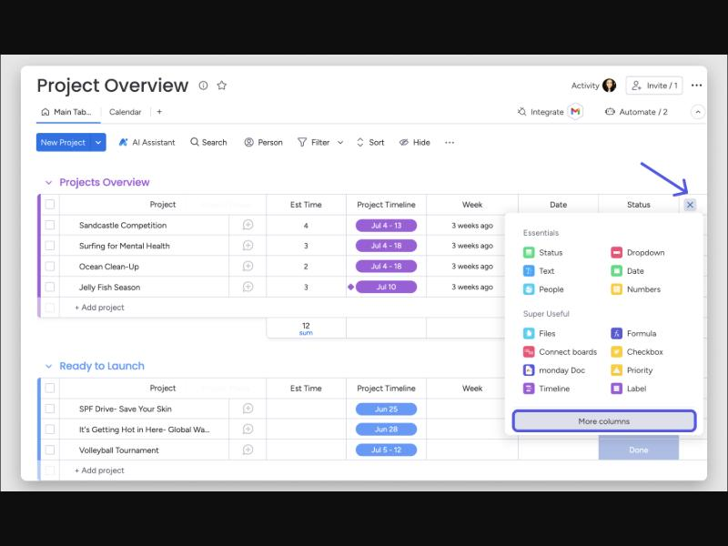

Bàn tổ dạng lưới — 3 phương án
Hai lệnh đầu lấy đúng dữ liệu màn hiện tại (LSX26-0004 Bìa sách A5, LSX26-0003 Ruột sách A5 64 trang). Ba lệnh sau là số minh hoạ để thấy lưới khi có việc tạm dừng, việc đã xong, và lệnh mà công đoạn sau đang chạy. Mỗi dòng là một việc của tổ; cột Công đoạn của lệnh cho thấy cả tuyến và ô của tổ mình nằm ở đâu.
Ảnh tham khảo đã mở và chụp



Đổi chữ (áp cả ba)
- Bỏ cột "Mã lệnh" con (0004, 0003) vì trùng mã lệnh. Một mã lệnh duy nhất LSX26-0004.
- "Tổ nhận lúc" → "Nhận việc". "Thời gian dự kiến 2 phút" → "Dự kiến xong" ghi giờ, ai nhìn cũng biết còn bao lâu.
- "Quy cách" dài cả dòng giấy → chỉ "Ivory 210", đủ để tổ cắt nhận ra; đủ quy cách xem trong ngăn.
- Thêm cột "Đã làm / cần" (200 / 350 tờ in) thay cho dòng chữ "200 tờ in đang chạy" dưới chuỗi.
- "Tổ của bạn" bỏ; ô công đoạn của tổ được viền đậm trong tuyến.
- Hai lệnh cùng khách thì khách vẫn ghi đủ, nhưng chữ thường, không viết hoa toàn bộ.
A. Một lưới phẳng
Một bảng duy nhất, mỗi việc một dòng 46px, không bảng con, không thanh cuộn ngang. Tuyến công đoạn nằm gọn trong một cột dạng chữ nối mũi tên: chấm xám là đã xong, chấm xanh là đang chạy, chấm rỗng là chưa tới, ô có viền là của tổ mình. Hàng chân cộng tổng như Excel.
- Nhìn tổng quát nhanh nhất, sắp xếp và lọc theo cột như bảng tính.
- Nhược: tuyến dài quá 5 công đoạn sẽ bị cắt "…", rê chuột mới thấy đủ.
Bàn tổ Cắt 2
BảngLịchSản lượng
| Lệnh | Sản phẩm | Trạng thái | Đã làm / cần | Máy | Người làm | Công đoạn của lệnh | Dự kiến xong |
|---|---|---|---|---|---|---|---|
| LSX26-0004 | Bìa sách A5 Bibica | Đang chạy | 200 / 350 | ITO 100 | Đào Văn Hoan | Cắt tờ›In 4 màu›Cán màng›Cắt thành phẩm (thuê ngoài) | 6/10 19:06 |
| LSX26-0003 | Ruột sách A5 64 trang Bibica | Chờ làm | 0 / 350 | Kyodo 132 | Chưa giao thợ | Cắt tờ›In 4 màu›Gấp (thuê ngoài)›Bắt tay, vào keo›Xén 3 mặt | 6/10 19:10 |
| LSX26-0006 | Hộp kẹo Tết 2027 Tân Phú | Tạm dừng | 120 / 600 | ITO 100 | Lê Minh Tú | Cắt tờ›In 4 màu›Cán màng›Bế›Dán hộp | 10/10 11:00 |
| LSX26-0007 | Tờ rơi khai trương Phúc Long | Chờ làm | 0 / 1.000 | Kyodo 132 | Lê Minh Tú | Cắt tờ›In 4 màu›Cắt thành phẩm | 10/10 15:30 |
| LSX26-0002 | Lịch bàn 2027 Vinamilk | Xong | 300 / 300 | ITO 100 | Đào Văn Hoan | Cắt tờ›In 4 màu›Cán màng›Đóng lò xo | 8/10 16:20 |
| 5 việc | 1 đang chạy | 620 / 2.600 tờ in | 1 việc chưa giao thợ |
Trang 1/1Dòng/trang 25
Công đoạn đã xongĐang chạyChưa tớiÔ có viền là công đoạn của tổ
B. Nhóm theo trạng thái
Như A nhưng chia khối theo trạng thái, mỗi khối có vạch màu bên trái và khoảng trống giữa các khối. Tuyến công đoạn vẽ thành dải ô màu (mỗi ô một công đoạn, ô của tổ có viền), dưới dải ghi "Bước 1 trên 4" và công đoạn sau mình.
- Mở màn là thấy ngay việc nào đang chạy, việc nào đang đứng, không cần đọc chip.
- Dải màu cho biết cả tuyến đang tới đâu chỉ bằng một cái liếc.
- Nhược: tên công đoạn không hiện đủ trên dải, phải rê chuột.
Bàn tổ Cắt 2
BảngLịchSản lượng
Đang chạy1 việc
| Lệnh | Sản phẩm | Đã làm / cần | Máy | Người làm | Công đoạn của lệnh | Dự kiến xong | |
|---|---|---|---|---|---|---|---|
| LSX26-0004 | Bìa sách A5 Bibica | 200 / 350 | ITO 100 | Đào Văn Hoan | Bước 1 trên 4, sau mình: In 4 màu | 6/10 19:06 | Ghi mẻ |
Tạm dừng1 việc
| LSX26-0006 | Hộp kẹo Tết 2027 Tân Phú | 120 / 600 | ITO 100 | Lê Minh Tú | Dừng vì: chờ giấy về | 10/10 11:00 | Chạy tiếp |
Chờ làm2 việc
| LSX26-0003 | Ruột sách A5 64 trang Bibica | 0 / 350 | Kyodo 132 | Chưa giao thợ | Bước 1 trên 5, sau mình: In 4 màu | 6/10 19:10 | Giao thợ |
| LSX26-0007 | Tờ rơi khai trương Phúc Long | 0 / 1.000 | Kyodo 132 | Lê Minh Tú | Bước 1 trên 3, sau mình: In 4 màu | 10/10 15:30 | Bắt đầu |
Xong1 việc
| LSX26-0002 | Lịch bàn 2027 Vinamilk | 300 / 300 | ITO 100 | Đào Văn Hoan | Đã giao đủ, In 4 màu đang chạy | 8/10 16:20 |
5 việcDòng/trang 25
XongĐang chạyTạm dừngChờ làmChưa tớiÔ có viền là công đoạn của tổ
C. Dòng việc + hàng tuyến
Mỗi việc là một dòng lưới bình thường, ngay dưới là một hàng mảnh vẽ tuyến công đoạn thành hộp nối nhau, mỗi hộp ghi tên công đoạn, tổ làm, và dấu trạng thái. Hàng tuyến có thể thu gọn bằng mũi tên ở đầu dòng.
- Gần màn hiện tại nhất nên tổ quen ngay, nhưng bỏ hẳn bảng con và thanh cuộn ngang, chữ in hoa, khung lồng khung.
- Thấy được tổ nào làm công đoạn sau, thuê ngoài, chỗ KCS cuối.
- Nhược: mỗi việc cao gấp đôi A, một màn chứa ít việc hơn.
Bàn tổ Cắt 2
BảngLịchSản lượng
| Lệnh | Sản phẩm | Trạng thái | Đã làm / cần | Máy | Người làm | Dự kiến xong | Nhận việc |
|---|---|---|---|---|---|---|---|
| ▾LSX26-0004 | Bìa sách A5 Bibica | Đang chạy | 200 / 350 | Máy cắt tờ ITO 100 | Đào Văn Hoan | 6/10 19:06 | 9/10 09:57 |
Cắt tờ Cắt 2 In 3 màu 4 màu Nhóm thợ in máy 4 màu Cán màng Tổ Cán màng Cắt thành phẩm Gia công Thành Công | |||||||
| ▾LSX26-0003 | Ruột sách A5 64 trang Bibica | Chờ làm | 0 / 350 | Máy cắt tờ Kyodo 132 | Chưa giao thợ | 6/10 19:10 | 9/10 09:57 |
Cắt tờ Cắt 2 In 3 màu 4 màu Nhóm thợ in máy 4 màu Gấp Gia công Thành Công Bắt tay, vào keo Thành phẩm Xén 3 mặt Cắt | |||||||
| 2 việc | 1 đang chạy | 200 / 700 tờ in | 1 việc chưa giao thợ | ||||
Trang 1/1Dòng/trang 25
Công đoạn đã xongĐang chạyChờ làmChưa tớiHộp có viền đậm là công đoạn của tổ